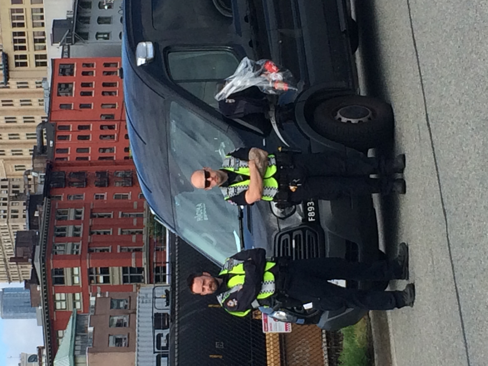
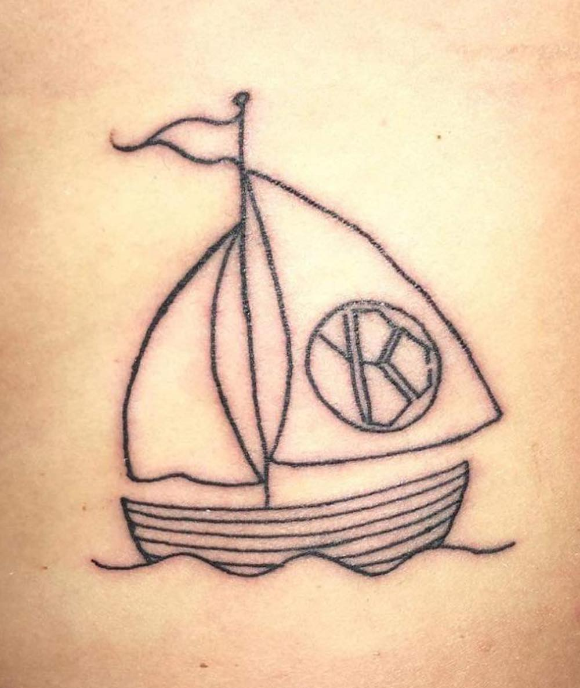

Welcome to YBCWhere all your wildest dreams will come True
The MusicCheck out some of our favorite songs
Outback Baby
Album: Yacht Club
Crashed My Truck

Album: Yacht Club
Save Your Buddy's Life

Album: Yacht Club
Plants
Album: Yacht Club
Potatoes

Album: Yacht Club